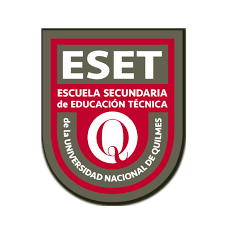

Escuela Secundaria Técnica UNQ

Inicio
4to
6to
7mo
Sexto Programación
Ciclo Exploratorio
Encuesta para responder
Encuesta Ciclo Exploratorio
Presentación
Repaso de Conceptos
Enunciado Trabajo Práctico BackEnd
Enunciado Trabajo Practico FrontEnd